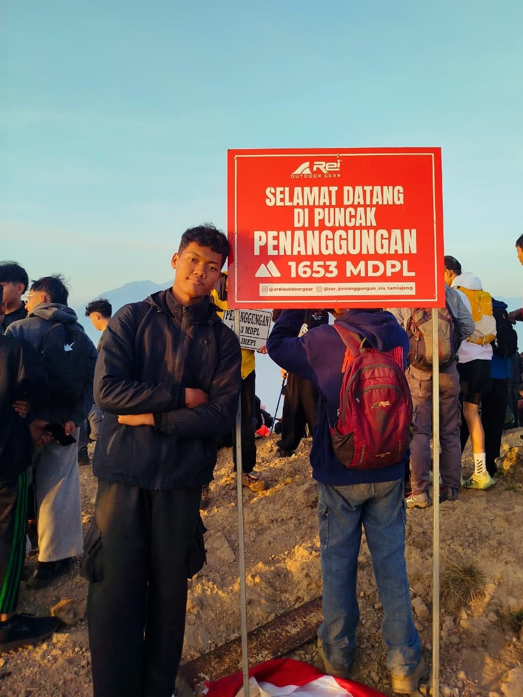

Halo, Saya Achmad Saifudin Junior Full-Stack Developer.
Membangun aplikasi web modern dan responsif dengan fokus pada kode yang bersih, efisien, dan mudah dipelihara. Terbuka untuk terus belajar, berkolaborasi, dan menghadirkan pengalaman pengguna yang interaktif dan bermanfaat.

Tentang Saya
Perjalanan saya di dunia pemrograman web dimulai dari rasa penasaran untuk memahami bagaimana sebuah situs bekerja dari dalam—mulai dari data, logika, hingga tampilan di layar. Kini saya fokus mengembangkan diri sebagai Junior Full-Stack Developer yang membangun aplikasi web end-to-end: dari struktur database hingga antarmuka yang interaktif.
Saya terbiasa bekerja dengan Laravel & Node.js di sisi server, serta Vue 3, React, dan Tailwind CSS di sisi klien. Saya terus mengasah praktik terbaik seperti Clean Architecture, prinsip SOLID, dan penulisan kode yang mudah diuji.
Motivasi saya adalah memecahkan masalah nyata dengan solusi perangkat lunak yang sederhana namun efektif. Saya aktif belajar, terbuka terhadap masukan, dan selalu berusaha memberikan yang terbaik di setiap tugas atau proyek yang saya kerjakan.
interface EngineeringStandard {
maintainability: "high";
testCoverage: ">=85%";
latencyBudget: number;
}
const mindset: EngineeringStandard = {
maintainability: "high",
testCoverage: ">=85%",
latencyBudget: 200, // ms target
};
// Core Philosophy
function shipSolution(issue: Problem): Product {
const cleanCode = refactor(issue);
const scalable = optimizeArchitecture(cleanCode);
return deployWithConfidence(scalable);
}Keahlian & Tech Stack
Alat kerja dan instrumen teknologi yang saya gunakan sehari-hari untuk mendesain arsitektur tangguh dan pengalaman pengguna web tanpa friksi.
Frontend Dev
UI/UX & Reactive ClientMembangun antarmuka interaktif dengan komponen modular, animasi mikro fluid, dan aksesibilitas tinggi.
Backend Dev
Engine & Database ArchitectureMengembangkan endpoint API performa tinggi, validasi data ketat, dan pengelolaan transaksi database kompleks.
DevOps & Tools
Infrastructure & WorkflowsAutomasi deployment berulang, containerization aplikasi, dan monitoring performa server terdistribusi.
Karya Unggulan
Seleksi implementasi arsitektur perangkat lunak terkini yang memecahkan masalah operasional dan menyajikan antarmuka presisi.
Riwayat Pendidikan
Bagian ini akan menampilkan perjalanan karier, pengalaman kerja, serta latar belakang pendidikan saya.
SMKN 1 Dlanggu
Rekayasa Perangkat LunakMenempuh pendidikan di jurusan Rekayasa Perangkat Lunak, mempelajari dasar-dasar pemrograman, pengembangan aplikasi web, basis data, serta praktik langsung membangun proyek nyata seperti Literra, sebuah aplikasi toko buku online dengan sistem multi-role.
Tertarik Merekrut atau Berkolaborasi?
Dapatkan ringkasan profil, keahlian teknis, dan cara menghubungi saya dalam satu berkas PDF yang ringkas dan terstruktur. Dokumen ini akan terus saya perbarui seiring perkembangan proyek dan pengalaman.
Hubungi Saya
Pintu komunikasi selalu terbuka untuk kolaborasi, proyek freelance, pertukaran ide teknologi, atau penawaran kerja sama strategis. Pilih kanal favorit Anda di bawah ini.
waving_hand Mari Terhubung
Salin alamat email saya dengan satu klik, atau terhubung langsung melalui kanal sosial media di bawah ini.